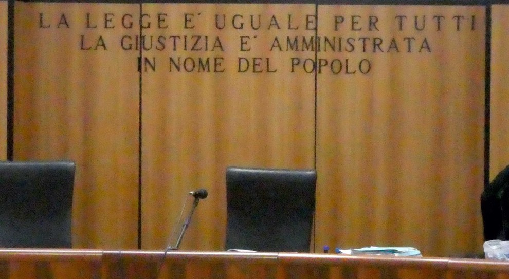
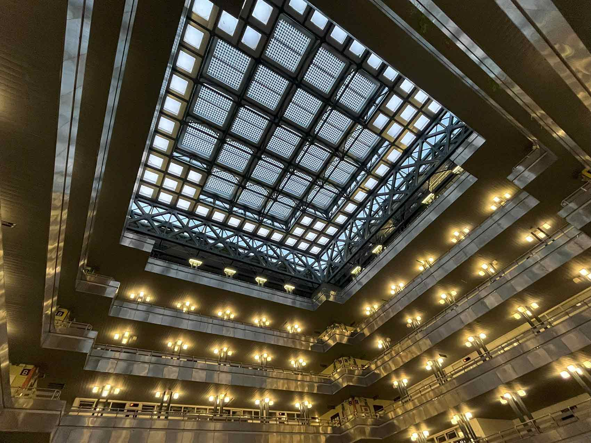

Il progetto con le Camere Penali di Ancona
In questo anno scolastico, insieme alla mia classe, ho partecipato al progetto organizzato dalle Camere Penali di Ancona. Il progetto si è articolato in due momenti principali.
Durante il primo incontro, svolto a scuola, abbiamo approfondito in modo teorico il funzionamento del processo penale e il ruolo delle diverse figure che vi prendono parte, come il giudice, il pubblico ministero, l’avvocato, la parte civile e l’imputato. L’incontro è stato molto interessante e coinvolgente, anche perché abbiamo avuto la possibilità di partecipare attivamente attraverso domande, confronti e una simulazione di processo svolta direttamente in classe.
La seconda parte del progetto si è svolta il 29 maggio presso il Tribunale di Ancona, dove abbiamo avuto l’opportunità di assistere personalmente a diversi procedimenti giudiziari. Nel corso della mattinata abbiamo osservato sei processi di diversa natura, entrando così in contatto diretto con una realtà che fino a quel momento conoscevamo soltanto attraverso i libri o i mezzi di informazione.
La mia riflessione
Questa esperienza mi ha fatto riflettere molto. Prima di partecipare al progetto consideravo i processi e il mondo della giustizia come qualcosa di lontano dalla mia vita quotidiana, legato a situazioni eccezionali o a persone molto diverse da me. Osservando invece i casi trattati in tribunale, ho capito che si tratta di realtà molto più vicine di quanto immaginassi e che chiunque può trovarsi coinvolto, direttamente o indirettamente, in situazioni simili.
Ritengo quindi che questo progetto sia stato molto utile, perché mi ha permesso di comprendere meglio il funzionamento della giustizia italiana e di acquisire una maggiore consapevolezza sull’importanza del rispetto delle regole e delle responsabilità che ciascun cittadino ha nella società.

